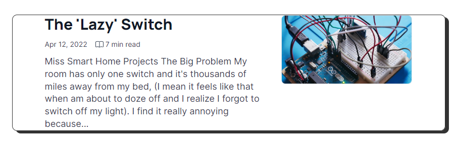

My Projects

The Lazy switch is a project targeting to convert manual light switches to smart contactless switches. This was the first full on personal IoT project I did. The 'Lazy' switch converts the manual switch to a contactless switch. The switch can be used in offices to prevent spread of germs, especially following the pandemic, through avoiding contact with the switch. The individual needs to bring their hands closer to the switch to activate it to turn on/off.